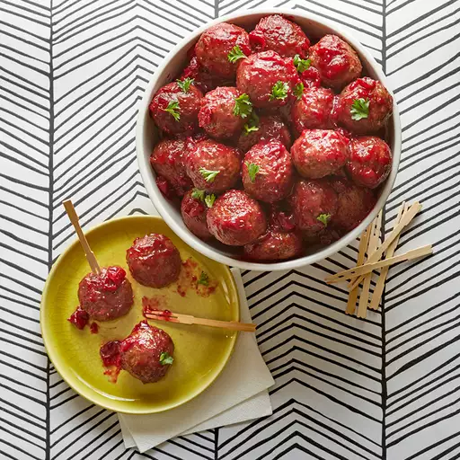

Crock Pot Party Meatballs

People go crazy for these easy to make meatballs
Ingredient list:
- 1 (2 pound) bag frozen cooked meatballs
- 1 (14.5 ounce) can whole berry cranberry sauce
- 1 (12 ounce) bottle tomato-based chili sauce
- ½ lemon, juiced
- 2 drops hot sauce (such as Tabasco®), or more to taste
Steps
- Place frozen meatballs into a slow cooker. Add cranberry sauce, chili sauce, lemon juice, and hot sauce. Stir to distribute sauce evenly over meatballs.
- Cook on High until meatballs are completely thawed and hot, about 3 hours.